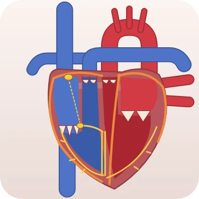
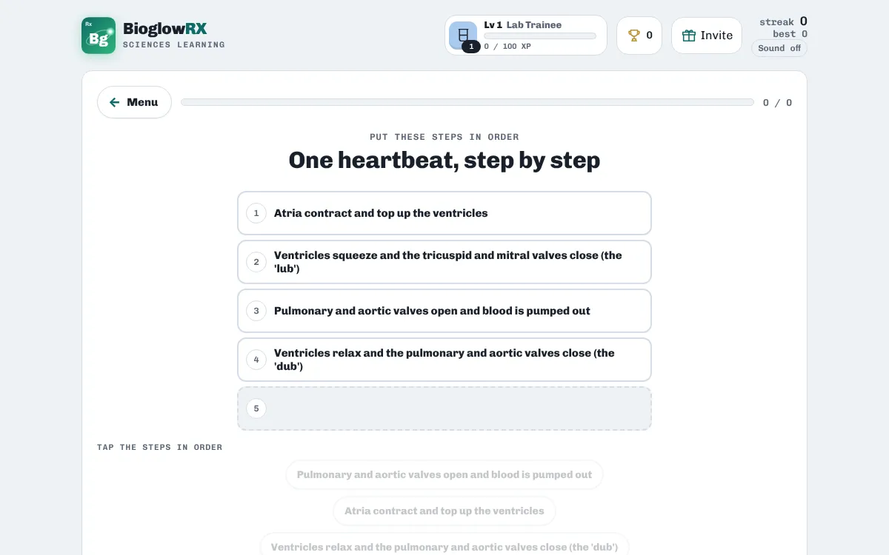
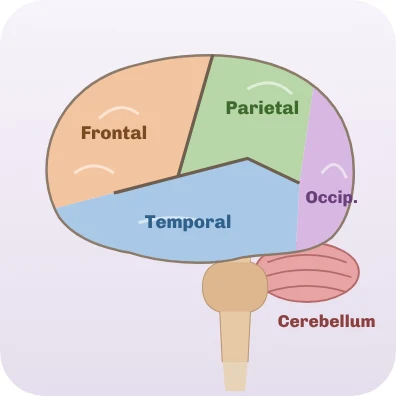

Anatomy & Physiology · free · no login
Blood flow through the heart

The heart is two pumps side by side. The right side sends oxygen-poor blood to the lungs; the left side sends oxygen-rich blood to the whole body. Valves between the chambers keep the blood moving one way.

Heart Flow has you put each journey in the right order, chamber by chamber and valve by valve, with a labelled diagram on every card. It also covers the heart's electrical system.
A taste of what's inside
| Journey | Order |
|---|---|
| Oxygen-poor blood: from the body to the lungs | Venae cavae → Right atrium → Tricuspid valve → Right ventricle → Pulmonary valve → Pulmonary artery → Lungs |
| Oxygen-rich blood: from the lungs to the body | Lungs → Pulmonary veins → Left atrium → Mitral valve → Left ventricle → Aortic valve → Aorta → Body |
Ways to practise
- Study notes · Read the key ideas first: everything the games ask is in here.
- Explore the heart · Tap any part to see what it does.
- Put it in order · Order blood flow, the heartbeat and the heart's wiring.
- Who does this job? · Read the job, pick the heart part.
- Match Pairs · Pair each part with its job.
How to study with it
- Read the Study notes: chambers, valves, big vessels and the electrical system.
- Play Put it in order for each journey.
- Finish with Who does this job? and Match Pairs.
Questions
Which side of the heart pumps to the body?
The left side. The left ventricle pumps oxygen-rich blood into the aorta and out to the body.
Is it free?
Yes. Everything is free, with no ads and nothing to buy.
Do I need an account?
No. There is no login. Your scores, streaks and certificates are saved on your device.
Does it work on a phone?
Yes. It works in any modern browser on phones, tablets, Chromebooks and computers.
More free practice

Anatomy & PhysiologyCranial nerves quizAll 12 nerves: number, name and jobPlay free Anatomy & PhysiologyABG practice: blood gas casesRead pH, CO₂ and bicarbonate in patient casesPlay free
Anatomy & PhysiologyABG practice: blood gas casesRead pH, CO₂ and bicarbonate in patient casesPlay free BioglowRX Sciences Learning turns university science textbooks into free games, chapter by chapter: chemistry, anatomy & physiology, pharmacology, nutrition, and health & wellness. See all subjects.